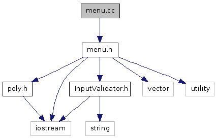

Main Page
Classes
Files
menu.cc File Reference
implement the menu logic
More...
#include "
menu.h
"
Include dependency graph for menu.cc:

Go to the source code of this file.
Detailed Description
implement the menu logic
Author:
Daniel Uber
Definition in file
menu.cc
.
Generated on Tue Oct 18 10:48:16 2011 for Polynomial Manipulation by
1.5.6